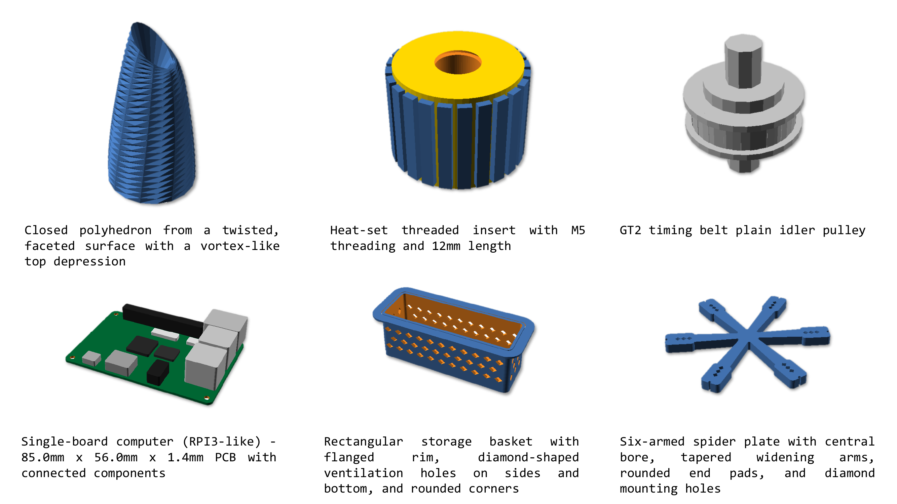
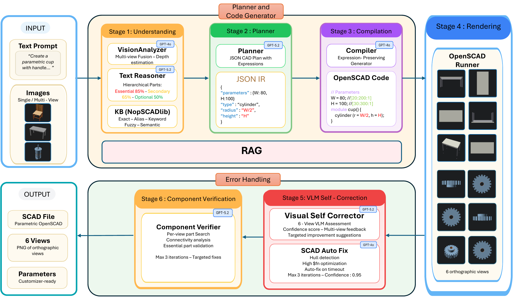

1Iowa State University 2New York University
IEEE International Conference on LLM-Aided Design (LAD), 2026

Natural language in, executable and editable parametric OpenSCAD programs out. No task-specific training.
Text-to-CAD generation has the potential to make mechanical CAD more accessible, but existing approaches face a trade-off between data dependence and output fidelity. Supervised methods rely on large paired text–model datasets, while zero-shot prompting strategies are often brittle and tend to lose the parametric structure needed for downstream editing and customization. We present CRAFT, a corrective and robust multi-agent framework that produces parametric OpenSCAD programs from natural language without task-specific training. At its core is a JSON intermediate representation that preserves symbolic parametric expressions throughout the generation process, enabling models to remain editable rather than collapsing into hard-coded geometry. CRAFT combines semantic understanding, parametric planning, compilation, rendering, self-correction, and component-level verification within a layered recovery process, using multi-view visual feedback to detect and repair geometric errors. Across NopSCADlib, ABC, and Slice-100K, CRAFT is competitive with direct zero-shot baselines in perceptual and geometric quality while exposing substantially more editable parametric structure.
Six CRAFT-generated models, live in your browser. Drag to rotate, scroll to zoom. Amber surfaces are model interiors.

CRAFT preserves symbolic parametric structure, so individual parameters can be edited after generation while the program remains valid and re-renderable. Below: the same CRAFT-generated spur gear program, re-compiled with edited customizer parameters. Every panel is live.
Out-of-library ABC parts, all live: ground truth alongside CRAFT, GPT-4o, and GPT-5.2 outputs for the same input. CD = per-part aligned Chamfer distance (lower is better; green = best).
ABC: cover plate (0012749)
ABC: clamp block (0070304)
ABC: cylindrical hub (0069012)
Per-part CD from the benchmark's aligned scorer (PCA + 24-rotation + ICP alignment); aggregate results across all parts are in the tables below and in the paper.
Perceptual alignment on NopSCADlib
| Metric | Split | CRAFT | GPT-4o | GPT-5.2 | GT |
|---|---|---|---|---|---|
| CLIP ↑ | Overall | 0.2226 | 0.2033 | 0.2145 | 0.2342 |
| Simple | 0.2272 | 0.2098 | 0.2174 | 0.2279 | |
| Medium | 0.2132 | 0.2014 | 0.2144 | 0.2342 | |
| Complex | 0.2279 | 0.1983 | 0.2116 | 0.2409 | |
| FID ↓ | Overall | 95.11 | 119.42 | 106.22 | — |
| Simple | 152.37 | 144.38 | 136.22 | — | |
| Medium | 126.88 | 159.56 | 147.95 | — | |
| Complex | 144.85 | 184.39 | 160.51 | — |
Geometric accuracy
| Dataset | Method | Chamfer ↓ | F1@1% ↑ | Voxel IoU ↑ |
|---|---|---|---|---|
| NopSCADlib | CRAFT | 0.0654 | 0.2530 | 0.2356 |
| GPT-4o | 0.0733 | 0.2467 | 0.2135 | |
| GPT-5.2 | 0.0662 | 0.2587 | 0.1890 | |
| ABC | CRAFT | 0.0841 | 0.1233 | 0.0433 |
| GPT-4o | 0.1008 | 0.0857 | 0.0212 | |
| GPT-5.2 | 0.0969 | 0.0875 | 0.0192 | |
| Slice-100K | CRAFT | 0.0612 | 0.2924 | 0.0616 |
| GPT-4o | 0.0751 | 0.2122 | 0.0711 | |
| GPT-5.2 | 0.0622 | 0.2768 | 0.0636 |
Editability results, full per-tier tables, the ablation, and recovery statistics are in the paper.
@inproceedings{rafi2026craft,
title = {CRAFT: Corrective and Robust Multi-Agent Framework for Text-to-Parametric CAD},
author = {Rafi, Mohammed Musthafa and Jignasu, Anushrut and Saraeian, Mahdi
and Hegde, Chinmay and Balu, Aditya and Krishnamurthy, Adarsh},
booktitle = {IEEE International Conference on LLM-Aided Design (LAD)},
year = {2026}
}